Timeline :
September 2019 - Oktober 2019
Team Partner :
Ahmad Habib Fitriansyah
Aanisah Rifda Rusdjy
Roles :
Interface Designer, UX Researcher
Tools :
Figma, Marvel, Maze.design, GForm
Berdasarkan hasil riset yang dilakukan, pengangguran lulusan universitas di Indonesia meningkat pada tahun 2017. Hal itu disebabkan oleh fresh graduate yang sulit mendapatkan pekerjaan karena tidak mempunyai skill yang cukup, tidak mengetahui minat dan bakatnya dan kurangnya informasi mengenai bidang - bidang yang ada di dunia kerja.
Metode yang digunakan dalam proses desain adalah User \ Centered Design.
Untuk memvalidasi malasah yang kita tentukan, saya dan team melakukan user interview kepada 4 orang mahasiswa semester akhir, 2 Orang fresh graduate dan 1 orang Manager Director The Hatch Indonesia (Perusahaan Talent Incubator). Hasil user interview ini kami mendapatkan hal - hal yang baru yang sangat berguna seperti masalah baru yang sangat menarik untuk diselesaikan. Akhirnya kami mulai mengelompokan beberapa goals, need dan pain dari interviewee.
Dari hasil diskusi dan interview kami menentukan target user yaitu mahasiswa dan fresh graduate dengan rentang umur 18 - 25 tahun dan kami membuat 2 User Persona.
Untuk membuat solusi saya dan team menggunakan metode How Might We (How Might We), setiap anggota team akan memberikan ide. Setelah ide terkumpul maka kami akan memutuskan ide – ide yang akan menjadi solusi untuk masalah yang kita miliki. Hasilnya sebagai berikut :
Dari hasil HMW ini saya dan team melakukan brainstorming untuk menentukan app dengan fitur speerti apa yang bisa memenuhi HMW tersebut. Pada saat itu masing - masing mencoba menuliskan ide mereka masing masing sebanyak 3 buah. Masing - masing anggota akan menjelaskan idenya dan ide yang terkumpul akan divoting untuk menentukan ide mana yang akan dipilih. Hasilnya adalah :

Untuk menentukan jenis platform kami melakukan riset melalui internet dan juga menanyakan langsung kepada target pengguna melalui user interview.
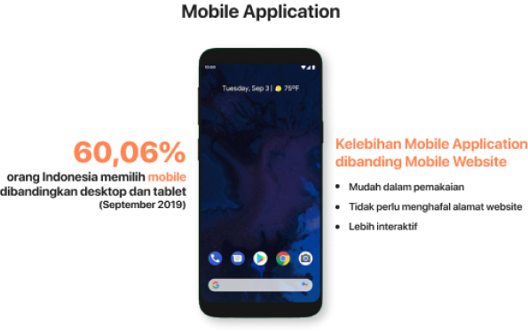Metode yang digunakan dalam pengujian Workio adalah menggunakan tool Maze.design. Kami memberikan misi berupa task task terkait fitur yang ada di aplikasi Workio. Misi yang kita berikan antara lain
Score = 63
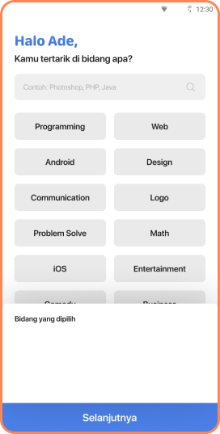score = 82
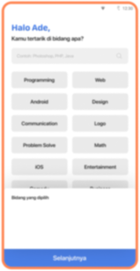Saya dan team merubah bagian “Bidang yang diplih” menjadi fixed agar user lebih mudah melihat dan menghapus bidang jika terjadi keselahan tanpa perlu melakukan scroll kebawah.
Merubah tulisan “Mentor Saya” karena tidak menjelaskan fungsi card tersebut dan banyak tester yang kebingungan. Akhirnya kita merubahnya menjadi “Chat Mentor Saya”. Selain itu Menambahkan keterangan “Rata - Rata Gaji” agar lebih menjelaskan arti uang tersebut.
Score = 75
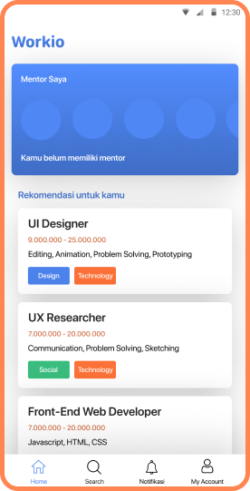score = 98
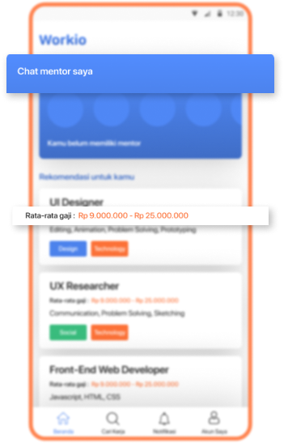Score = 79
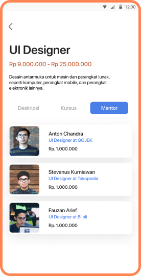score = 85
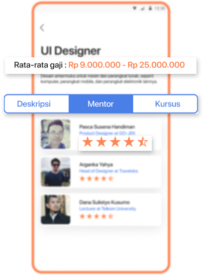Kami mengubah tab Deskripsi, Kursus, Mentor seperti yang dapat dilihat digambar. Hal itu dilakukan agar tab tersebut lebih mudah dilihat dan dikenali. Sebelumnya ada beberapa tester yang tidak mengetahui jika tab tersebut dapat ditekan. Lalu kita mengubah harga dari mentor menjadi rating, karena beberapa tester mengatakan mereka lebih memperdulikan rating dibanding harga jika ingin memilih mentor untuk menggambarkan kualitasnya.
Memberikan user opsi untuk memilih apa saja yang ingin dia dapatkan dari mentor. Hal itu berasal dari feedback user yang mengatakan ada beberapa user yang mungkin hanya membutuhkan “Intervew Training” saja. Hal itu menambah user saticfaction karena biaya yang dikeluarkan akan menjadi lebih efektif karena sesuai kebutuhan.
Score = 79
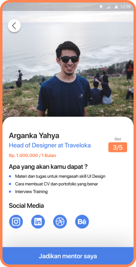score = 85
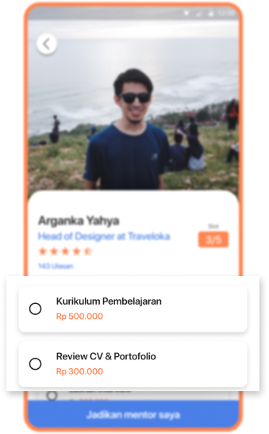Score = 60
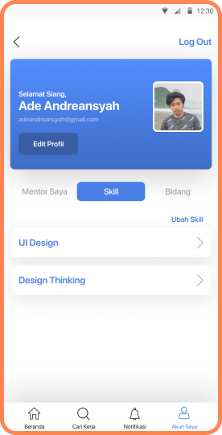score = 95
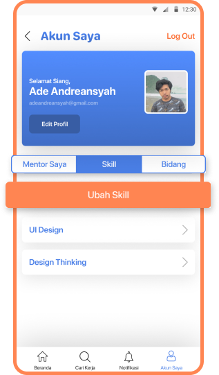Mengubah menjadi Button yang besar dan memberi warna orange agar lebih contrast dan terlihat oleh user. Sebelunya banyak tester yang kesulitan menemukan cara untuk mengubah bidang/skill karena terlalu kecil link yang kita berikan.
Play Prototype
Banyak sekali pelajaran yang bisa di ambil ketika menjalankan project untuk perlombaan Gemastik ini. Rasa percaya diri yang tinggi dengan berpikir bahwa user akan selalu paham dengan apa yang sudah kita buat adalah hal yang salah. Apa yag menurut kita mudah belum tentu men Banyak sekali riset yang harus lebih didalami untuk mendapatkan hasil yang lebih baik lagi.
Alhamdulillah saya dan teman teman mendapatkan Juara 3 di kompetisi Gemastik 12 ini !!